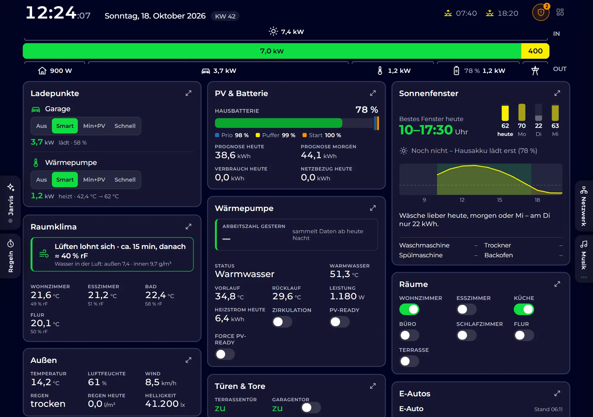

Excel- und Papierprozesse ablösen
Daten werden automatisch importiert, nach Regeln zugeordnet und ausgewertet – statt mühsam abgetippt und von Hand sortiert. Weniger Fehler, mehr Zeit für das Wesentliche.
Zu viel Handarbeit in Excel, eine Branchensoftware, die nicht mehr passt, oder neue Pflichten wie die E-Rechnung? Das Ingenieurbüro Michael Pröpster entwickelt maßgeschneiderte Lösungen, die genau zu Ihren Abläufen passen – verständlich erklärt, sauber umgesetzt und langfristig betreut.
Ob kleines Werkzeug für einen einzelnen Arbeitsschritt oder die Ablösung eines gewachsenen Systems – im Mittelpunkt steht immer der konkrete Nutzen für Ihren Arbeitsalltag.
Daten werden automatisch importiert, nach Regeln zugeordnet und ausgewertet – statt mühsam abgetippt und von Hand sortiert. Weniger Fehler, mehr Zeit für das Wesentliche.
Rechnungen im Format XRechnung oder ZUGFeRD erstellen und empfangen – passend zu Ihren bisherigen Vorlagen und Abläufen, ohne teure Komplettumstellung.
Bewährte, aber in die Jahre gekommene Software wird analysiert, dokumentiert und schrittweise auf eine moderne, wartbare Plattform übertragen – Ihr Fachwissen bleibt erhalten.
Ein Login für alle Anwendungen, sicherer Zugang für Mitarbeitende, Kunden und Partner – auf Basis etablierter Standards und der Microsoft-Cloud.
Anwendungen, die im Browser auf PC, Tablet und Smartphone laufen – ohne Installation, immer auf dem aktuellen Stand.
Software, die sich mit Ihrer Hilfe selbst weiterentwickelt: Wünsche direkt in der Anwendung äußern – die KI prüft, setzt um und liefert aus, sobald Sie zustimmen.
Gut zu wissen: Seit 2025 müssen Unternehmen E-Rechnungen empfangen können, ab 2027 bzw. 2028 gilt schrittweise auch die Pflicht zum Versand. Ein früher Umstieg erspart Hektik zum Stichtag.
Klassische Software bleibt stehen, sobald das Projekt abgeschlossen ist. Mit KI lässt sich ein Kreislauf aufbauen, in dem Ihre Anwendung laufend besser wird – angestoßen von den Menschen, die täglich damit arbeiten.
Fehler oder Idee direkt in der Anwendung melden – per Klick, Formular oder im Gespräch mit dem eingebauten KI-Assistenten.
Die KI bewertet Machbarkeit, Aufwand und Risiken und stellt bei Unklarheiten gezielt Rückfragen.
Nichts passiert ohne Freigabe: Sie geben den Vorschlag frei, ergänzen ihn oder verwerfen ihn.
Die Änderung wird programmiert und durch automatisierte Tests abgesichert – nur was alle Prüfungen besteht, kommt weiter.
Die verbesserte Version wird automatisch ausgeliefert. Sie probieren sie aus – und der Kreislauf beginnt von vorn.
Ein Assistent, der Ihre Daten kennt, beantwortet Fragen in normaler Sprache: „Wie hoch war die Umsatzsteuer im letzten Quartal?“ oder „Wann lohnt es sich heute, die Waschmaschine zu starten?“. Dazu kommen klassische Automatisierungen: Schnittstellen zwischen Programmen, angebundene Geräte und Regeln, die Routinearbeit übernehmen.
Bereits im Einsatz: Das Haus-Dashboard weiter unten entwickelt sich genau so weiter – Wünsche gehen per Sprachassistent ein, die KI setzt sie um, und nach der Freigabe läuft die neue Version.
Klare Schritte, sichtbare Fortschritte und keine Überraschungen bei Umfang und Kosten.
Im kostenlosen Erstgespräch schildern Sie Ihre Situation. Gemeinsam wird geklärt, wo der größte Hebel liegt.
Sie erhalten einen verständlichen Lösungsvorschlag mit transparentem Angebot – ohne Fachchinesisch.
Nach jeder Etappe gibt es einen lauffähigen Zwischenstand. Sie testen früh und steuern jederzeit mit.
Einführung, Dokumentation und Unterstützung im Betrieb – auch wenn später Anpassungen nötig werden.
Als inhabergeführtes Ingenieurbüro aus Schwarzach bei Nürnberg verbindet IMP langjährige Erfahrung in der professionellen Softwareentwicklung mit kurzen Wegen und persönlicher Betreuung – für Unternehmen wie für Privatkunden.
Photovoltaik, Batteriespeicher, Wallbox und Wärmepumpe sind installiert – aber arbeiten sie auch zusammen? Ein durchdachtes Energiemanagement sorgt dafür, dass möglichst viel eigener Strom im eigenen Haus bleibt. Und mit einer passenden Heimautomatisierung haben Sie alles auf einen Blick.

Ein kurzer Anruf oder eine E-Mail genügt. Das Erstgespräch ist kostenlos und unverbindlich – auch wenn die Idee noch ganz am Anfang steht.